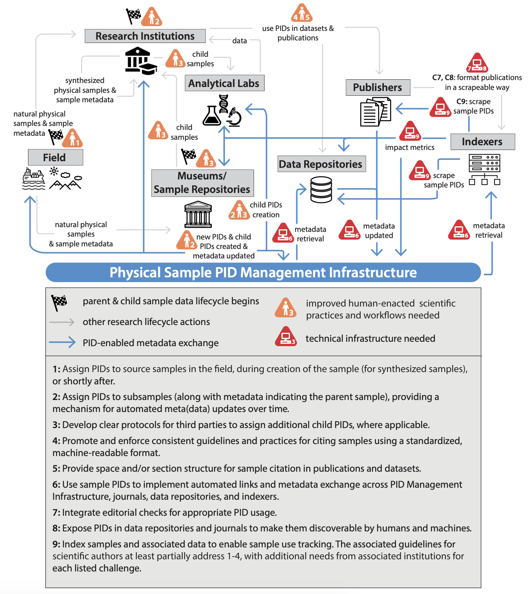
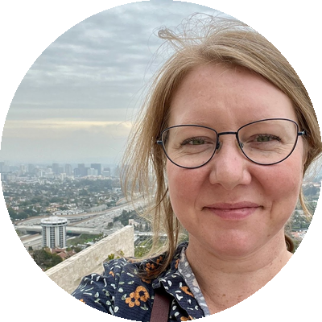
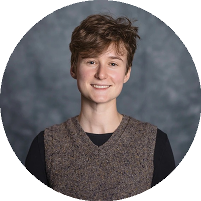

Open and FAIR Samples: Maturing the Sample Data Ecosystem
Broader Impacts
- Enhance the long-term value of U.S. national investments in sample collections and sample-based science
- Support FAIR samples and reproducibility in sample-based research
- Empower researcher alignment with funder directives promoting sample metadata archiving and reuse

Click the image above to explore the sample data ecosystem, or read more at doi.org/10.1038/s41597-025-05295-z
The Challenge
Scientific samples are difficult to discover, cite, and connect with related research outputs. Fragmented infrastructure and inconsistent awareness, adoption, and guidance for usage of persistent identifiers for samples limits sample FAIRness. In the current sample data ecosystem, every stakeholder has a part to play — researchers, data repositories, sample repositories, scholarly publishers, and PID infrastructure providers.
Our Work
The Open and FAIR Samples project will develop four community roadmaps with key stakeholders — researchers, data repositories, sample repositories, and scholarly publishers — to advance the adoption of persistent identifiers and leading metadata practices for scientific samples.
Our project centers participatory design and social science methods to understand key barriers to adoption, perceptions of value, and opportunities for future incentives and infrastructure support.
Key Deliverables
- Four community roadmaps — co-developed with researchers, data repositories, sample repositories, and scholarly publishers
- Undergraduate and graduate educational modules and peer-reviewed publications, co-authored with community members
- Hackathons, surveys, workshops, and focus groups to prototype, socialize, and advance development and adoption of open science infrastructure for sample-based research
Project Team
The Open and FAIR Samples project is led by:


